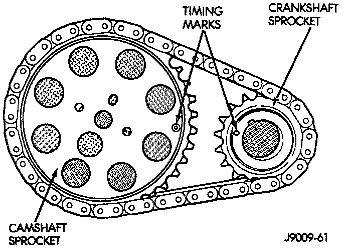
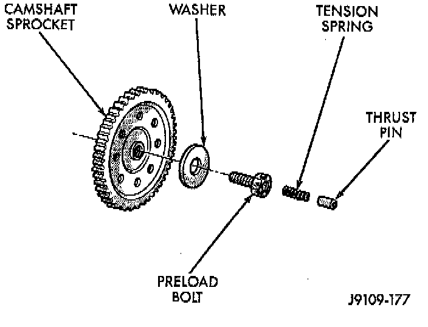
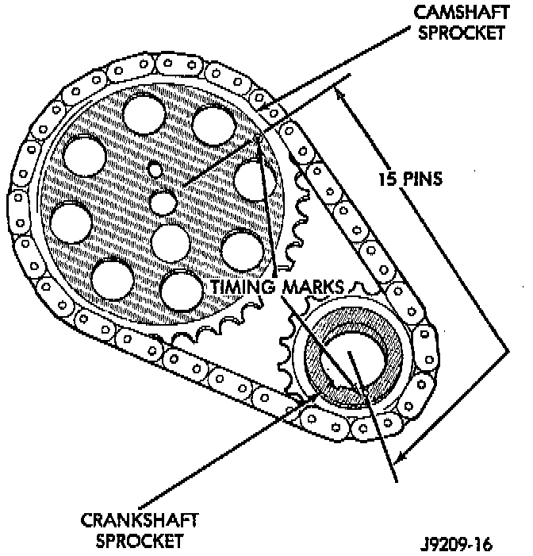

Sprocket Replacement
REMOVAL1. Disconnect negative cable from battery.
2. Remove the fan and shroud.
3. Remove the serpentine drive belt.
4. Remove the crankshaft vibration damper.
5. Remove the timing case cover.

6. Rotate crankshaft until the "0" timing mark is closest to and on the center line with camshaft sprocket timing mark.
7. Remove the oil slinger from the crankshaft.

8. Remove the tension spring and thrust pin from the preload bolt. Remove the camshaft sprocket retaining preload bolt and washer.
9. Remove the crankshaft sprocket, camshaft sprocket and timing chain as an assembly.
10. Installation of the timing chain with the timing marks on the crankshaft and camshaft sprockets properly aligned ensures correct valve timing. A worn or stretched timing chain will adversely affect valve timing. If the timing chain deflects more than 12.7 mm (1/2 inch) replace it. The correct timing chain has 48 pins. A chain with more than 48 pins will cause excessive slack.

NOTE: Assemble the timing chain, crankshaft sprocket and camshaft sprocket with the timing marks aligned.
INSTALLATION
1. Apply Mopar Silicone Rubber Adhesive Sealant, or equivalent to the keyway in the crankshaft and insert the key. With the key in the keyway on the crankshaft, install the assembly on the crankshaft and camshaft.
2. Install the camshaft sprocket retaining preload bolt and washer. Tighten the preload bolt to 108 Nm (80 ft. lbs.) torque.
3. To verify correct installation of the timing chain, turn the crankshaft to position the camshaft sprocket timing mark as shown. Count the number of chain pins between the timing marks of both sprockets. There must be 16 pins.
4. Install the crankshaft oil slinger.
5. Replace the oil seal in the timing case cover.
6. Lubricate the tension spring, thrust pin and pin bore in the preload bolt with Mopar Engine Oil Supplement, or equivalent. Install the spring and thrust pin in the preload bolt head.
7. Install the timing case cover and gasket.
8. With the key installed in the crankshaft keyway, install the vibration damper, washer and bolt. Lubricate and tighten the bolt to 108 Nm (80 ft. lbs.) torque.
9. Install the serpentine drive belt and tighten to the specified tension.
10. Install the fan and hub assembly. Install the shroud.
11. Connect negative cable to battery.